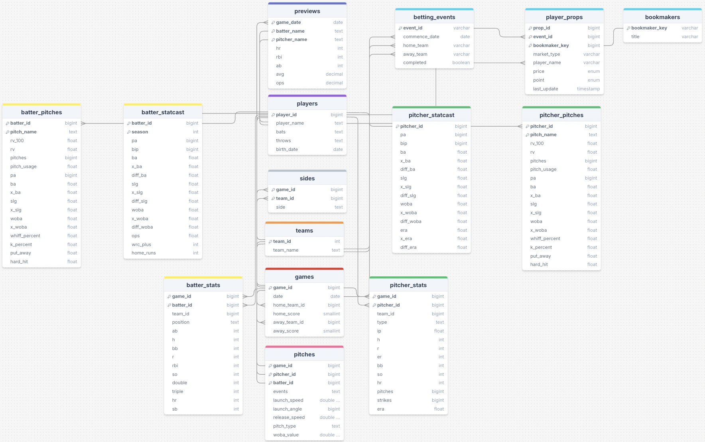
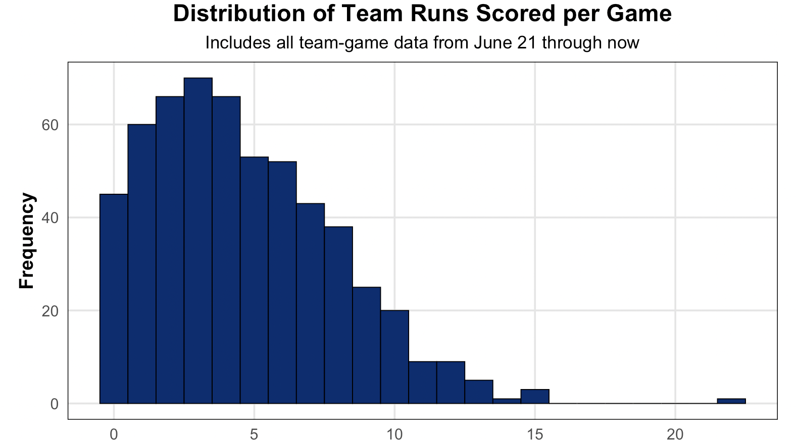
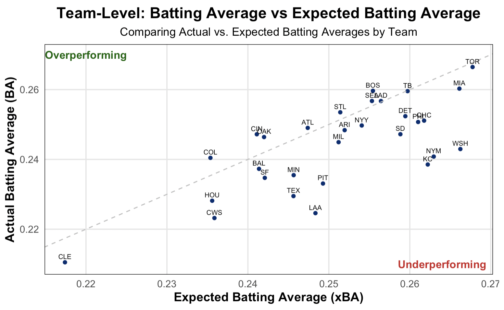
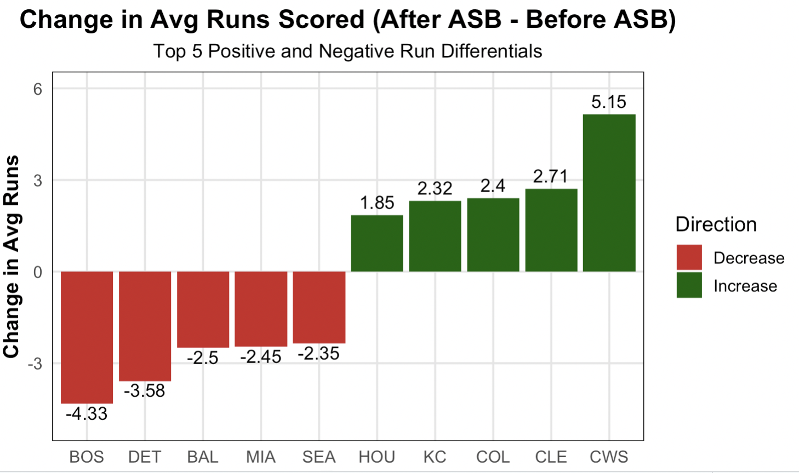
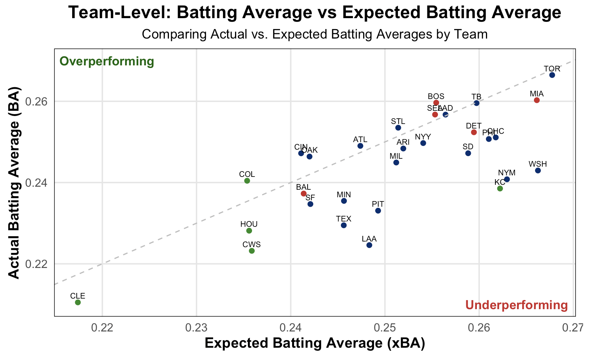
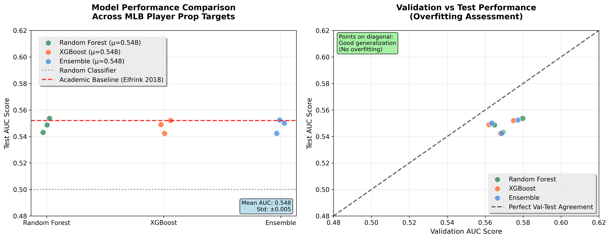
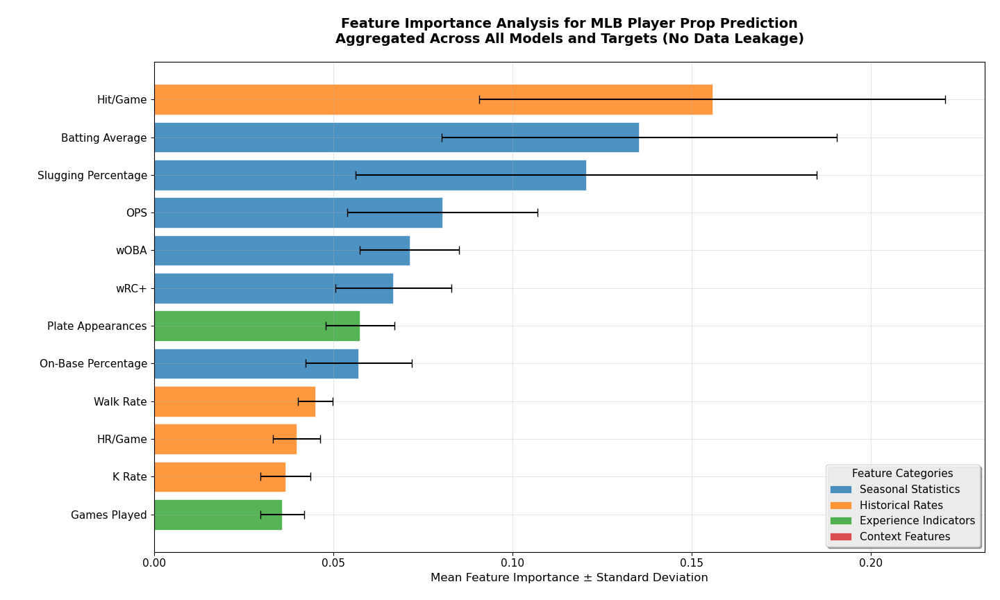

Introduction
A core principle of financial independence is the ability to generate passive income– leveraging existing capital to create returns with minimal ongoing effort. Traditional strategies include investing in dividend-paying stocks, exchange-traded funds (ETFs), or income-generating real estate. While these approaches offer relatively stable long-term gains, some investors have begun exploring alternative, higher-risk opportunities such as sports betting. Though more volatile, betting markets can offer the potential for faster and higher returns, raising the question: can a data-driven approach to betting, particularly in Major League Baseball (MLB), serve as a viable income stream?
Baseball is a team sport played between two sides of nine players, where the goal is to score runs by hitting a pitched ball and advancing around four bases. Teams alternate between offense (batting) and defense (pitching and fielding), with each half-inning ending after three outs. A standard game consists of nine innings. While the rules are relatively simple, modern baseball is highly strategic and data-driven. Teams constantly analyze player matchups, pitching tendencies, and situational probabilities to gain an edge, which is exactly what makes the sport so appealing for sports betting as well.
With the rise of advanced statistics and real-time data, bettors now have a wide range of wagering options. These include moneylines (who wins the game), over/unders (total runs scored), and player props like total bases, which track how many bases a player earns through hits in a given game. Despite the availablity of data, many sports bettors rely on gut and intuition but it has proved to be a losing strategy for most (Thompson, Gazel, and Rickman 1996). Compounding this challenge is the fact that sportsbooks maintain a built-in edge through the way odds are structured. For example, even in an evenly matched game, both teams would be listed at -110 odds instead of +100. This means a $100 winning bet would return just $90.90 in profit, rather than $100, creating a margin that favors the sportsbook. Thus, users have to win more than 52.4% of their bets to just break even (Naomi 2023).
In this context, leveraging the vast amount of granular baseball data becomes crucial. With its rich statistical history and highly measurable in-game actions, baseball is one of the most analytically robust sports. It offers bettors an opportunity to apply data-driven strategies and models to gain an edge over the market.
We aim to investigate whether recent player performance, historical trends, advanced metrics, and variations in sportsbook odds can be leveraged to identify profitable opportunities in Major League Baseball betting markets.
Background
Sports Betting Market Structure and Efficiency
The modern sports betting landscape has evolved dramatically with the legalization of online wagering across multiple jurisdictions, creating increasingly sophisticated and competitive markets. Academic research on sports betting market efficiency has produced mixed conclusions, with studies finding varying degrees of informational efficiency depending on sport, market type, and temporal factors (Hubáček, Šourek, and Železný 2019). While primary markets for game outcomes tend toward efficiency through large betting volumes and professional analysis, secondary markets for player propositions often exhibit greater pricing disparities due to lower liquidity and reduced analytical attention.
Market efficiency research has consistently identified persistent inefficiencies in proposition betting markets, particularly for individual player statistics where information processing may be less sophisticated than for primary game outcomes. These inefficiencies create potential opportunities for systematic approaches that can process large volumes of player performance data to identify mispriced betting opportunities.
The house edge inherent in sportsbook pricing represents the fundamental challenge for profitable betting strategies. Standard odds structures ensure that sportsbooks maintain mathematical advantages even in efficiently priced markets, requiring bettors to achieve win rates substantially above 50% to generate positive returns. This edge varies across bet types and operators, with player propositions often carrying higher margins than primary game markets.
Predictive Modeling in Baseball Analytics
Baseball analytics has undergone revolutionary advancement since the introduction of sabermetrics, with modern machine learning applications achieving increasingly sophisticated prediction capabilities. (Huang and Li 2021) demonstrated that statistical models could achieve over 94% accuracy in MLB game outcome prediction using advanced feature selection techniques, while (Li, Huang, and Li 2022) developed comprehensive frameworks for identifying the most predictive baseball statistics for outcome prediction.
However, prediction accuracy and betting profitability represent fundamentally different optimization targets. (Walsh and Joshi 2024) provided critical insights demonstrating that model calibration matters more than raw accuracy for betting applications, with calibration-optimized models achieving +34.69% ROI compared to -35.17% for accuracy-focused approaches. This finding has profound implications for sports betting model development, suggesting that traditional machine learning evaluation metrics may be counterproductive for betting applications.
Recent research has increasingly focused on ensemble methods for sports prediction, with (Galekwa and colleagues 2024) finding that combining multiple algorithms consistently outperforms single-model approaches across various sports betting contexts. This research supports the development of comprehensive modeling frameworks that leverage multiple analytical techniques rather than relying on individual algorithms.
Strategic Approaches to Sports Betting
Sports betting strategy research has traditionally distinguished between bottom-up and top-down methodologies, each with distinct advantages and limitations. Bottom-up strategies build predictions from fundamental performance analysis, requiring sophisticated statistical modeling and comprehensive data infrastructure to develop probabilistic assessments that can outperform market consensus. While exceptionally challenging to implement successfully, these approaches offer the potential to identify market inefficiencies that persist over extended periods.
Top-down strategies focus on market-based analysis, examining line movements, betting volumes, and cross-market price discrepancies to identify temporary value opportunities. These approaches are generally more accessible to implement but face significant scalability limitations as successful practitioners often find themselves restricted or banned by sportsbooks that view systematic market exploitation as detrimental to their profitability models.
Research has documented the effectiveness of both approaches under specific conditions, but has largely failed to examine their potential integration. (Hubáček, Šourek, and Železný 2019) achieved profitability by explicitly reducing correlation with bookmaker predictions while maintaining predictive accuracy, suggesting that the most effective approaches may involve developing independent probabilistic assessments that deliberately diverge from market consensus.
Research Gaps and Methodological Innovation
Existing literature reveals a significant gap in formal examination of hybrid approaches that combine bottom-up predictive modeling with top-down market analysis. While practitioners may informally blend these strategies, academic research has not rigorously evaluated whether such integration provides superior risk-adjusted returns compared to either methodology employed independently.
This gap is particularly notable given the complementary nature of these approaches: bottom-up modeling excels at identifying performance patterns that may be undervalued by markets, while top-down analysis can identify optimal timing and execution strategies for capitalizing on identified opportunities. The combination potentially addresses the primary weaknesses of each individual approach while amplifying their respective strengths.
Furthermore, much of the existing research focuses on prediction accuracy rather than practical betting implementation, often overlooking critical factors such as bankroll management, market access limitations, and the sustainability of identified edges as markets adapt to repeated exploitation. These practical considerations are essential for translating theoretical modeling success into real-world profitability.
MLB as an Analytical Environment
Baseball presents unique advantages for data-driven betting analysis due to its extensive statistical history and the granular nature of recorded performance data. The sport’s discrete, measurable events enable precise statistical modeling, while the introduction of Statcast technology has created unprecedented opportunities for advanced analytical approaches incorporating biomechanical measurements and contact quality metrics.
The individual nature of many baseball events—particularly batter versus pitcher confrontations—creates natural opportunities for player-specific proposition betting that may be less efficiently priced than aggregate team outcomes. Player proposition bets focus on individual statistical achievements rather than team outcomes, offering wagers on specific measurable events during a game.
Two of the most common player propositions involve hits and total bases. A hit occurs when a batter successfully reaches base via single, double, triple, or home run. Sportsbooks typically offer over/under markets on whether a player will record more than 0.5 hits (at least one hit) or 1.5 hits (multiple hits) in a game. Total bases represent the cumulative value of a player’s hits: singles count as one base, doubles as two, triples as three, and home runs as four. A player hitting a double and a single would accumulate three total bases, while two singles would total two bases. Common total bases markets include over/under 1.5 or 2.5 bases.
These individual performance markets offer several analytical advantages over team-based betting. Player propositions depend primarily on individual skill and recent form rather than complex team dynamics, creating more predictable statistical patterns. The large number of games played throughout the baseball season provides substantial sample sizes for statistical analysis while creating numerous daily betting opportunities across multiple markets and operators.
Recent industry research has identified significant variation in sportsbook accuracy across different types of baseball bets, with player propositions showing greater pricing disparities between operators compared to primary game markets. This market fragmentation creates potential opportunities for strategic line shopping and value identification across multiple betting platforms (Vandenbruaene, Annaert, and Ceuster 2022).
Research Objective and Contribution
Our investigation seeks to address the identified research gap by developing and evaluating a comprehensive hybrid framework that systematically integrates bottom-up machine learning prediction with top-down market analysis for MLB player proposition betting. The bottom-up component employs calibrated ensemble models trained on comprehensive Statcast and performance data to generate probabilistic assessments of individual player outcomes. The top-down component analyzes pricing patterns and market inefficiencies to identify optimal value opportunities and execution strategies.
This methodological integration represents a novel contribution to sports betting literature, treating predictive modeling and market analysis as complementary information sources within a unified expected value maximization framework. By combining fundamental performance analysis with market intelligence, we aim to determine whether hybrid approaches can achieve superior risk-adjusted returns while addressing the practical implementation challenges that often limit the real-world applicability of theoretical betting strategies.
The investigation employs rigorous statistical validation methodologies and addresses sustainability concerns often overlooked in academic literature, providing insights into both the theoretical potential and practical limitations of data-driven sports betting approaches in modern day market environments.
Data
Data Sources
We collected data from five sources. StatsAPI, pybaseball, and oddsapi were accessed via a custom Python scraper, allowing us to ingest structured data on player performance, advanced metrics, and betting markets. MLB.com was scraped using an automated headless browser to extract dynamically loaded content not available through public APIs. Finally, we sourced supplemental tracking data from Baseball Savant by downloading static CSV files. Together, these pipelines enabled a comprehensive, multi-source dataset suitable for statistical analysis, machine learning, and real-world validation.
statsapi
The first source was Major League Baseball’s public API, accessed using the statsapi Python package. This provided structured JSON data containing player metadata, team identifiers, game results, and detailed per-game statistics for batters and pitchers. This source served as the foundation for our dataset. To automate collection, we deployed the scraper on Railway with a scheduled task that runs daily at 7:00 AM PST, retrieving the previous day’s game data. The raw JSON was seamlessly parsed using SQL queries in PostgreSQL and loaded into a set of normalized relational tables.
Our tables included players, teams, games, sides, batter_stats, and pitcher_stats. The players table contains a list of all individuals who appeared in at least one Major League Baseball game from June 21st to the present, each assigned a unique player_id for consistent identification. The teams table includes all 30 MLB teams, each mapped to a unique team_id, enabling team-level joins and analysis. The sides table identifies which team played as the home or away team in each game, an important distinction in baseball since the home team bats second and may have strategic advantages. The batter_stats and pitcher_stats tables store detailed per-game box score data, separated by hitting statsistics and pitching statistics. These stats include traditional and advanced metrics such as hits, home runs, and strikeouts for batters, and innings pitched, earned runs, and walks for pitchers. The use of primary keys such as player_id, game_id, and team_id allowed for seamless joins across tables. This structure enables efficient querying across player appearances, game contexts, and performance metrics, while remaining flexible enough to incorporate additional data sources such as advanced Statcast metrics and other tracking metrics.
mlb.com
Our second data source was MLB’s official website, mlb.com, which we scraped using Selenium, a Python package for automated browser interaction. This approach allowed us to extract pre-game matchup information from MLB.com’s preview pages, data not available through the public Stats API. The scraper was designed to click into each game’s “Preview” button, capture the relevant information, then return to the main page and repeat this process for all games scheduled on a given day. The extracted data included valuable context such as probable pitcher matchups and batter-vs-pitcher histories. This scraper was deployed on Railway and scheduled to run slightly earlier than the StatsAPI job, at 6:55 AM PST.
A major challenge with this source was the absence of standardized identifiers such as player or game IDs. To address this, we created a composite key in the preview table using a combination of game_date, batter_name, and pitcher_name to uniquely identify each record. The JSON data gathered was poorly structured so it required an extensive use of regular expressions (REGEX), which made the parsing process significantly more complex.
In the end, we produced a table called previews, which included the game date, projected starting pitcher, and historical performance data of each batter against that pitcher– such as home runs, at-bats, and batting average. This table allowed us to enrich our dataset by linking valuable pre-game context with actual in-game performance, enabling more nuanced analyses of matchups and outcomes.
Baseball Savant
To supplement our scraped data, we incorporated a third source: Baseball Savant, a publicly available website that provides detailed, season-long statistics that go beyond traditional box scores. Unlike our other sources, which offered game-by-game data, Baseball Savant’s data is cumulative and tracks advanced metrics throughout the season. For example, it includes expected batting average which incorporates exit velocity (how hard the ball is hit) and launch angle (angle at which the player swings their bat) and pitch usage rates, which displays how frequently pitchers throw specific pitch types. The site offers the ability to download the data as CSV files, which we did during the All-Star break to capture a midseason snapshot of player performance. For the purposes of our analysis, we chose to download the data once, as the season is already more than halfway complete and player performance is unlikely to vary significantly over the remaining games. After downloading the CSV files, we cleaned the data by removing unnecessary columns and renaming fields to improve clarity and ensure consistency across our dataset.
The processed data was stored in four normalized tables within our PostgreSQL database. The batter_pitches table captured how individual batters performed against specific pitch types—such as fastballs, sliders, and curveballs. It included advanced metrics like Run Value (a measure of how much a specific pitch type increases or decreases run expectancy when thrown to that specific batter) and expected batting average to estimate likely outcomes. Similarly, the pitcher_pitches table reflected how effective each pitcher was with their various pitch types, using the same set of metrics but from the pitcher’s perspective. The batter_statcast and pitcher_statcast tables provided aggregated performance statistics that were not pitch-specific, offering a broader view of each player’s season-level tendencies. This Statcast data was particularly valuable as it combined pitch-level insights with overall performance metrics, enabling a more complete evaluation of both hitters and pitchers.
pybaseball
Our next source was the pybaseball Python package, which provided access to both MLB’s Statcast system and FanGraphs’ season-level statistics. This data enriched our dataset with advanced metrics such as batted ball tracking, pitch characteristics, and sabermetric indicators. Using pybaseball.statcast(), we collected pitch-level data spanning over a full season, which was then aggregated into player-game summaries. From FanGraphs, we retrieved seasonal statistics for both batters and pitchers, adding broader context around player performance.
To unify these sources, we relied on the players table to bridge the differing identifier systems used by Statcast and FanGraphs. Using player_id’s, we were able to integrate detailed tracking data with season-level statistics across 537 unique players. This join enabled us to capture both granular and long-term perspectives on performance.
Only historical data was needed so our scraper ran once and the data collected was pushed into PostgreSQL. This structure supported efficient querying across pitch-level, game-level, and seasonal data, and laid the groundwork for downstream modeling and analysis.
oddsapi
Our betting market data was sourced using the OddsAPI feed, which provided structured JSON data on sportsbook offerings for player props such as hits, total bases, and home runs. This information was retrieved using the same custom scraper architecture used in other parts of the project. For consistency and integration with our game-level data, we joined odds records to player performance using a combination of game date and team abbreviations, ensuring alignment across sources despite the absence of shared unique identifiers.
The betting data was parsed and stored in PostgreSQL, using fields such as market_type (type of prop bet), price (decimal odds), and point (over/under threshold). Additional fields included bookmaker_key and last_update, allowing us to track line movement and source attribution. Although historical odds are not yet fully populated, this structure enables us to link sportsbook expectations directly to individual player-game performances.
This integration supports downstream use cases such as model backtesting and value identification. By comparing predicted player outcomes to market-implied probabilities, we can evaluate model performance not only in terms of accuracy but also potential profitability. This alignment creates a clear path for analysis centered on identifying inefficiencies in publicly posted betting lines.
Data Organization
In the end the data was organized and combined using third normal form (3NF) to minimize redundancy and maintain reliable links across related data. Our entity-relationship diagram (ERD) (Figure 1) provides a clear visual representation, clearly mapping the relationships among all entities derived from our data acquisition process.

Data Dictionaries
This table contains underlying aggregated statisical data, which will not show up in the typical box score.(Baseball Savant)
| Variable | Name | Description |
|---|---|---|
batter_id |
Batter ID | Unique identifier for the batter. |
pitch_name |
Pitch Type | Name of the pitch type (e.g., fastball, slider). |
rv_100 |
Run Value / 100 Pitches | Average run value per 100 pitches seen. Measures how well batters hit each pitch. |
rv |
Run Value | Total run value assigned to differnt pitches the batter has seen. |
pitches |
Pitches | Total number of pitches thrown or seen. |
pitch_usage |
Pitch Usage | Percentage of time a specific pitch type is used. |
pa |
Plate Appearances | Number of completed batting appearances, including walks and hit-by-pitches. |
ba |
Batting Average | Hits divided by at-bats. |
x_ba |
Expected Batting Average | Likelihood a batted ball becomes a hit, based on exit velocity and launch angle. |
slg |
Slugging Percentage | Total bases divided by at-bats; measures power. |
x_slg |
Expected Slugging | Predicted slugging based on batted ball quality. |
woba |
Weighted On-Base Average | Gives more weight to extra-base hits than OBP (On Base Percentage). |
x_woba |
Expected wOBA | Predicted wOBA using quality-of-contact data. |
whiff_percent |
Whiff Percentage | Percentage of swings that result in misses. |
k_percent |
Strikeout Percentage | Strikeouts divided by plate appearances. |
put_away |
Put Away Percentage | 2-strike pitches resulting in strikeouts divided by total 2-strike pitches. |
hard_hit |
Hard Hit Percentage | Percentage of batted balls hit at 95+ mph. |
This table contains aggregated Statcast metrics for batters across different pitch types, including expected and actual performance differentials across batting average, slugging, and wOBA. (Baseball Savant)
| Variable | Name | Description |
|---|---|---|
batter_id |
Batter ID | Unique identifier for the batter. |
season |
Season | Year in which the statistics are from. |
pa |
Plate Appearances | Number of completed batting appearances, including walks and hit-by-pitches. |
bip |
Balls In Play | Number of batted balls put into play (excluding strikeouts, walks, etc.). |
ba |
Batting Average | Hits divided by at-bats. |
x_ba |
Expected Batting Average | Likelihood a batted ball becomes a hit, based on exit velocity and launch angle. |
diff_ba |
BA - xBA | Difference between actual and expected batting average. |
slg |
Slugging Percentage | Total bases divided by at-bats; measures power. |
x_slg |
Expected Slugging | Predicted slugging based on batted ball quality. |
diff_slg |
SLG - xSLG | Difference between actual and expected slugging percentage. |
woba |
Weighted On-Base Average | Gives more weight to extra-base hits than OBP. |
x_woba |
Expected wOBA | Predicted wOBA using quality-of-contact data. |
diff_woba |
wOBA - xwOBA | Difference between actual and expected wOBA. |
batter_id |
Batter ID | Unique identifier for the batter. |
ops |
OPS | On-base Plus Slugging — combines on-base % and slugging % to summarize hitter performance. |
wrc_plus |
wRC+ | Weighted Runs Created Plus — measures a player’s total offensive value, adjusted for park and league. 100 is league average. |
home_runs |
Home Runs | Number of home runs hit by the player. |
This table captures traditional game-level statistics for each batter, derived from box score data. (statsapi)
| Variable | Name | Description |
|---|---|---|
game_id |
Game ID | Unique identifier for the game. |
batter_id |
Batter ID | Unique identifier for the batter. |
team_id |
Team ID | Identifier for the team the batter played for in the game. |
position |
Position | Fielding position the batter played during the game. |
ab |
At-Bats | Number of official at-bats (excludes walks, HBP, sacrifices). |
h |
Hits | Number of hits. |
bb |
Walks (BB) | Number of base on balls (walks). |
r |
Runs | Number of runs scored. |
rbi |
Runs Batted In | Number of runs batted in. |
so |
Strikeouts | Number of times the batter struck out. |
double |
Doubles | Number of doubles hit. |
triple |
Triples | Number of triples hit. |
hr |
Home Runs | Number of home runs hit. |
sb |
Stolen Bases | Number of bases stolen during the game. |
This table stores pre-game matchup context, such as historical batter-vs-pitcher performance, scraped from MLB.com preview pages. (Selenium)
| Variable | Name | Description |
|---|---|---|
game_date |
Game Date | Date of the game. |
batter_name |
Batter Name | Name of the batter (no ID available in this table). |
pitcher_name |
Pitcher Name | Name of the opposing pitcher. |
hr |
Home Runs | Total number of home runs prior to the game against the projected pitcher. |
rbi |
Runs Batted In | Total number of RBIs prior to the game against the projected pitcher. |
ab |
At-Bats | Number of official at-bats prior to the game against the projected pitcher. |
avg |
Batting Average | Batting average prior to the game against the projected pitcher. |
ops |
On-Base Plus Slugging | OPS (OBP + SLG) prior to the game against the projected pitcher. |
This table contains player metadata, including full names and unique identifiers used to join across tables. (statsapi)
| Variable | Name | Description |
|---|---|---|
player_id |
Player ID | Unique identifier for the player. |
player_name |
Player Name | Full name of the player. |
bats |
Bats | Which side they hit from (Left or Right). |
throws |
Throws | Which side they pitch from (Left or Right). |
birth_date |
Birth Date | Day player was born. |
This table maps each team to its role in a given game (home or away), used to differentiate sides during analysis. (statsapi)
| Variable | Name | Description |
|---|---|---|
game_id |
Game ID | Identifier for the game. |
team_id |
Team ID | Identifier for the team. |
side |
Side | Side of the team in the game (home or away). |
This table contains metadata about each team, including their unique identifier and full name. (statsapi)
| Variable | Name | Description |
|---|---|---|
team_id |
Team ID | Unique identifier for the team. |
team_name |
Team Name | Full name of the team. |
This table holds game-level information such as date and final scores for both home and away teams. (statsapi)
| Variable | Name | Description |
|---|---|---|
game_id |
Game ID | Unique identifier for the game. |
date |
Date | Date the game was played. |
home_team_id |
Home Team ID | Identifier for the home team. |
home_score |
Home Team Score | Final score of the home team. |
away_team_id |
Away Team ID | Identifier for the away team. |
away_score |
Away Team Score | Final score of the away team. |
This table contains pitch-level Statcast data used for machine learning feature engineering, derived from individual pitch outcomes. (pybaseball)
| Variable | Name | Description |
|---|---|---|
game_id |
Game ID | Unique identifier for games table. |
batter_id |
Batter ID | Unique identifier for batters. |
pitcher_id |
Pitcher ID | Unique identifier for pitchers. |
events |
Pitch Outcome | Result of the plate appearance (single, home_run, strikeout, etc.). |
launch_speed |
Exit Velocity | Speed of batted ball off the bat in mph. |
launch_angle |
Launch Angle | Vertical angle of batted ball trajectory in degrees. |
release_speed |
Pitch Velocity | Speed of pitch when released in mph. |
pitch_type |
Pitch Type Code | Abbreviated pitch type (FF=four-seam fastball, SL=slider, etc.). |
woba_value |
Weighted On-Base Value | Run value assigned to the specific pitch outcome. |
This table contains game-level performance stats for each pitcher, including innings pitched, runs allowed, and ERA. (statsapi)
| Variable | Name | Description |
|---|---|---|
game_id |
Game ID | Unique identifier for the game. |
pitcher_id |
Pitcher ID | Unique identifier for the pitcher. |
team_id |
Team ID | Identifier for the team the pitcher played for. |
type |
Pitcher Type | Type of pitcher (e.g., starter, reliever). |
ip |
Innings Pitched | Total number of innings pitched in the game. |
h |
Hits Allowed | Total hits allowed. |
r |
Runs Allowed | Total runs allowed. |
er |
Earned Runs | Number of earned runs allowed. |
bb |
Walks | Number of walks issued. |
so |
Strikeouts | Number of batters struck out. |
hr |
Home Runs Allowed | Number of home runs allowed. |
pitches |
Pitches Thrown | Total number of pitches thrown. |
strikes |
Strikes Thrown | Number of strikes thrown. |
era |
Earned Run Average | ERA for the game. |
This table includes Statcast-derived advanced metrics for pitchers, highlighting differences between actual and expected outcomes like ERA, BA, SLG, and wOBA. (Baseball Savant)
| Variable | Name | Description |
|---|---|---|
pitcher_id |
Pitcher ID | Unique identifier for the pitcher. |
pa |
Plate Appearances | Number of completed batting appearances against the pitcher. |
bip |
Balls In Play | Number of batted balls put into play against pitcher. |
ba |
Batting Average | Batting average against the pitcher. |
x_ba |
Expected BA | Expected batting average based on batted ball data. |
diff_ba |
BA - xBA | Difference between actual and expected batting average. |
slg |
Slugging Percentage | Slugging percentage against the pitcher. |
x_slg |
Expected SLG | Expected slugging based on contact quality. |
diff_slg |
SLG - xSLG | Difference between actual and expected slugging. |
woba |
Weighted On-Base Avg | Weighted on-base average against the pitcher. |
x_woba |
Expected wOBA | Predicted wOBA using Statcast data. |
diff_woba |
wOBA - xwOBA | Difference between actual and expected wOBA. |
era |
ERA | Earned run average. |
x_era |
Expected ERA | Expected ERA based on contact and strikeout/walk profile. |
diff_era |
ERA - xERA | Difference between actual and expected ERA. |
This table contains pitch-type-level metrics for pitchers, including run value, whiff rate, usage rate, and contact quality outcomes. (Baseball Savant)
| Variable | Name | Description |
|---|---|---|
pitcher_id |
Pitcher ID | Unique identifier for the pitcher. |
pitch_name |
Pitch Type | Name of the pitch (e.g., fastball, slider). |
rv_100 |
Run Value / 100 Pitches | Average run value per 100 pitches thrown. |
rv |
Run Value | Total run value assigned to the pitch. |
pitches |
Pitches Thrown | Number of times this pitch type was thrown. |
pitch_usage |
Pitch Usage | Percentage of time this pitch type is used. |
pa |
Plate Appearances | Total plate appearances ending with this pitch type. |
ba |
Batting Average | Batting average against this pitch. |
x_ba |
Expected BA | Expected batting average against this pitch. |
slg |
Slugging Percentage | Slugging percentage against this pitch. |
x_slg |
Expected SLG | Expected slugging against this pitch. |
woba |
Weighted On-Base Average | wOBA against this pitch. |
x_woba |
Expected wOBA | Expected wOBA against this pitch. |
whiff_percent |
Whiff Percentage | Percent of swings against this pitch that missed. |
k_percent |
Strikeout Percentage | Percent of plate appearances ending in strikeouts on this pitch. |
put_away |
Put Away Percentage | Percent of 2-strike counts resulting in strikeouts with this pitch. |
hard_hit |
Hard Hit Percentage | Percent of batted balls hit 95+ mph off this pitch. |
This table links betting markets to scheduled or completed games. (oddsapi)
| Variable | Name | Description |
|---|---|---|
event_id |
Event ID | Unique identifier for each betting event. |
commence_date |
Start Time | Scheduled start date of the game. |
home_team |
Home Team | Name of the home team. |
away_team |
Away Team | Name of the away team. |
completed |
Completed Flag | Boolean indicating whether the event has finished. |
This table represents the planned betting market integration, designed to support model validation and value identification once populated with historical odds data. (oddsapi)
| Variable | Name | Description |
|---|---|---|
prop_id |
Prop ID | Primary key for individual prop bet offerings. |
event_id |
Event ID | Links to specific games through events table. |
bookmaker_key |
Sportsbook | Identifier for which bookmaker offered the odds. |
market_type |
Bet Type | Type of prop bet (hits, total_bases, home_runs, etc.). |
player_name |
Player Name | Name of player for the prop bet. |
price |
Betting Odds | Decimal odds offered by bookmaker. |
point |
Over/Under Line | Threshold value for over/under bets (0.5, 1.5, etc.). |
last_update |
Last Update | Time at which the prop was last updated. |
This lookup table provides sportsbook identifiers used in the player_props table.
| Variable | Name | Description |
|---|---|---|
bookmaker_key |
Sportsbook Key | Unique identifier for the bookmaker (e.g., draftkings). |
title |
Sportsbook Name | Display name of the sportsbook (e.g., “DraftKings”, “FanDuel”, etc.). |
Results
Over/Under Run Scoring Analysis
Our initial analysis focused on identifying which variables were most predictive of how many runs a team scores in a given game. We used a wide range of features grouped into three main categories:
Opposing starting pitcher (sp.) statistics, including metrics such as earned run average (ERA), opponent batting average (BA), innings pitched (IP), and expected stats like xERA and xBA.
Opposing relief pitcher statistics (rp.), which represent aggregated bullpen performance using the same types of measures as for starters, such as ERA and slugging percentage (SLG) allowed.
Team batter statistics (b.), covering both per-game aggregates (e.g., total hits, home runs, strikeouts) and season-long averages for the lineup, such as batting average (BA) and slugging percentage (SLG).
By integrating data from opposing starting pitchers, opposing relievers, and the team’s offensive performance, we aimed to construct a well-rounded model for predicting team run performance.
Exploratory Data Analysis
To gain insight into team scoring behavior, we computed summary statistics for runs scored per game. This helped us examine the distribution of offensive output and understand typical scoring ranges across all team-game observations.

The distribution of runs scored per game, as seen in Figure 2, was right-skewed, with a few high-scoring outliers pulling the mean upward. The median was 4 runs, while the mean was slightly higher at 4.6, reflecting the impact of those outliers. This mean value serves as a useful benchmark when modeling run production in machine learning, especially when deciding how to frame our prediction target.
We then focused on identifying which features were most indicative of how many runs a team scores in a game. To do this, we built a linear regression model using a wide range of pitching and hitting statistics. However, many baseball metrics are inherently correlated, for example, batting average contributes heavily to a weighted on base average (wOBA). Thus, we encountered significant multicollinearity. To address this, we systematically filtered out redundant variables, prioritizing those that captured unique predictive value. After this reduction process, we finalized a simplified linear model using the following variables: sp_era, sp_ba, sp_slg, rp_era, rp_slg, rp_ip, b_ba, b_sum_so, b_slg.
From our linear model, we identified three statistically significant predictors of runs scored:
Relief pitcher ERA (rp_era), with a p-value of 0.047
Relief pitcher innings pitched (rp_ip), with a p-value of 0.001
Team batting average (b_ba), with a p-value of 0.011.
Batting average stood out as something worth exploring further, especially as the season progresses, since we also have data on expected batting average (xBA) available.
Actual vs. Expected Batting Average
The law of averages suggest that after a large number of trials, outcomes tend to converge toward their expected value. While not a guarantee, this principle would imply that a teams collective batting average should align more closely with their expected batting average as the season progresses.
Expected batting average is a Statcast metric designed to estimate the likelihood that a batted ball will result in a hit. It is based on two key factors: exit velocity (how hard the ball is hit) and the launch angle (the angle at which the ball hits off the bat). Baseball is an incredibly difficult sport, and surface-level stats don’t always tell the full story. That is where expected statistics come in– they often provide a more accurate picture of a player’s performance. For example, a hitter might crush a ball at 115 MPH, but if it’s hit directly at a defender, it results in an out. On the other hand, a softly hit ball at just 40 MPH could drop into the perfect spot for a hit. xBA accounts for these inconsistencies by using historical data to estimate how often similar batted balls have gone for hits. While not perfect, it offers a more context-aware view of hitting performance.

Since we are trying to understand team run production it makes sense to inspect batting average– a statistic that closely correlates with runs scored. When a team’s actual batting average is lower than its expected batting average (xBA), it is indicative of underperformance. Further, we might anticipate that, over time, they will regress upward as outcomes begin to “even out.” In other words, we would expect more batted balls to start falling for hits, raising both their batting average and, ultimately, their run totals.
Conversely, teams currently overperforming their xBA may regress downward, with fewer hits falling in, resulting in fewer runs scored.
Tracking these differences (Figure 3) provides valuable insight into which teams may be poised for a shift in offensive production based on their underlying quality of contact.

A pattern emerges when comparing team-level batting average (BA) versus expected batting average (xBA) with changes in run production post-All-Star Break. Teams that had been underperforming their xBA, such as CLE, CWS, KC, and HOU are now scoring significantly more runs (Figure 4), suggesting positive regression. Conversely, overperforming teams like BOS and SEA have seen their run production drop, hinting at regression to the mean. Some teams that showed a noticeable change in scoring also had differences between actual and expected batting averages, though those differences were relatively small. (Figure 5).
The Rockies appear to be overperforming their expected batting average (xBA), but this is likely a product of Coors Field– MLB’s most hitter-friendly park. The high altitude and thin air in Denver inflate offensive stats by reducing air resistance and allowing balls to travel farther. This “Coors Field Effect” regularly skews batting metrics, making Colorado’s apparent overperformance more a reflection of park conditions than unsustainable hitting.

Machine Learning
Still working on a machine learning model based on the analysis above.
Prop Betting Analysis for Batters
We then explored hitter-focused prop bets, specifically whether a batter would record at least one hit or exceed two total bases in a given game. Total bases are calculated as follows: a single counts as one, a double as two, a triple as three, and a home run as four. To surpass two total bases, a player could hit a double, triple, home run, or combine multiple hits (e.g., two singles). Any combination totaling more than two qualifies for the over.
Pitcher-Batter Preview
To gain an edge in predicting favorable prop outcomes, we began by analyzing game preview data for each day, including scheduled starting pitchers and historical batter-vs-pitcher matchup statistics.
The first areas we explored was how specific batters had performed against certain pitchers in the past. In baseball, it is often said that some hitters “have have a pitcher’s number,” meaning they see a pitcher very well— a phenomenon that may not always be captured by traditional stats. When a batter consistently succeeds against a particular pitcher, it can signal a meaningful matchup advantage. With that in mind, we prioritized these historical trends as a way to identify potentially favorable prop bet opportunities.
Next, we analyzed discrepancies in run value per 100 pitches (RV/100) to identify potential mismatches between pitchers and hitters. Specifically, we calculated the difference in RV/100 by comparing a batter’s performance against specific pitch types to the different pitches thrown by the scheduled opposing pitcher. This allowed us to estimate how well a batter might match up based on the types of pitches they were likely to face in a given game. In other words, we cross-referenced each batter’s strengths with a pitcher’s weaknesses to uncover matchups where a hitter may be especially well-suited to succeed. To ensure the matchup was meaningful, we also applied a minimum usage threshold, filtering out pitch types that a pitcher rarely throws.
Interactive Hitter Matchup App
This dashboard is built to showcase the most advantageous matchups for the games daily.
The top table displays advantageous batter-pitcher matchup histories, filtered to highlight hitters with the strongest track records. To ensure meaningful results, we included only hitters with a batting average above .250 against the opposing pitcher—indicating they’ve recorded a hit in more than 25% of their past at-bats. Additionally, we required a minimum of four at-bats in the matchup to ensure a more substantial sample size.
The table below highlights batters with a significant advantage based on run value against specific pitch types. It is sorted from highest to lowest run value difference, showcasing hitters who are most likely to succeed against the opposing pitcher’s arsenal. To qualify for this table, a batter must have a run value differential greater than 2 in their favor. If a batter appears in both this table and the matchup history table above, they are highlighted in yellow– indicating that both analyses suggest a strong likelihood of success in that day’s game.
Users can sort the dashboard by date, with the default view automatically displaying matchups from the current day’s slate of games. If a previous date is selected, historical matchups and their corresponding results will appear. A color-coded key is provided below the date selector to help interpret the meaning of each highlighted row.
At the bottom of the dashboard is a simulated betting analysis. For players to get a hit,it is typically priced around -200 odds, meaning a $200 wager would win $100. For the purpose of our analysis, we will be assuming a $10 wager per player. A successful bet yields a $5 profit, while a loss forfeits the $10 stake. For total bases (2+), where odds are usually closer to +100, we again simulate $10 wagers. In this case, a win returns $10 in profit, while a loss results in a $10 loss. The dashboard aggregates daily results based on these assumptions and displays the cumulative outcomes for easy tracking.
Figure 6: Interactive dashboard showing advantageous MLB batter props, with hypothetical results displayed as well.
Machine Learning for Individual Player Props
While the interactive dashboard approach provided valuable insights into daily matchup advantages, we recognized the need for a scalable, data-driven approach to individual player prop prediction. To complement the human-guided analysis, we developed a comprehensive machine learning pipeline focused on predicting specific prop betting outcomes using historical player performance and advanced statistical modeling.
Statistical Thinking and Model Development
Our machine learning approach was grounded in established sports betting research, particularly the findings of Walsh & Joshi (2024) demonstrating that model calibration matters more than raw accuracy for betting profitability. Rather than optimizing solely for traditional machine learning metrics, we prioritized probability calibration to ensure our predictions would translate effectively to real-world betting scenarios.
We framed individual player prop prediction as a series of binary classification problems, creating target variables that directly corresponded to common betting markets: whether a player would record more than 0.5 hits (hits_over_0.5), more than 1.5 hits (hits_over_1.5), and more than 1.5 total bases (total_bases_over_1.5). This approach aligned our statistical models with practical betting applications while maintaining methodological rigor.
A central emphasis throughout our model development was avoiding data leakage to ensure our predictions would replicate information realistically available before game time. This methodological focus guided our feature engineering process and model validation approach, prioritizing realistic predictive capability over artificially inflated performance metrics.
Feature Engineering and Data Leakage Prevention
Our feature engineering process was designed with strict adherence to temporal constraints that would apply in real-world betting scenarios. We exclusively used information that would be available before game time, avoiding any same-game statistics that could artificially inflate model performance.
From seasonal batting statistics, we incorporated established player ability metrics including season_batting_avg, season_obp, season_slg, season_ops, season_woba, and season_wrc_plus. These provide baseline context for each player’s demonstrated skill level over the current season.
To capture per-game expectations without using same-game data, we calculated historical rate features such as historical_hr_per_game, historical_hit_per_game, historical_walk_rate, and historical_k_rate by dividing season totals by games played. These features provide realistic estimates of typical player output while maintaining temporal validity.
Experience and volume indicators included games_played, season_games, and contextual factors such as is_home and season indicators. These features capture player experience, health, and situational factors without incorporating any information from the game being predicted.
The final dataset comprised 19,587 player-game records across training (12,000), validation (4,000), and test (3,587) sets, with 47% of records containing complete seasonal statistical context. This represented a deliberate trade-off between data completeness and prediction reliability, focusing on players with sufficient historical information for meaningful modeling.
Model Architecture and Algorithm Selection
Based on academic literature review, we implemented a comparative analysis of multiple machine learning algorithms known to perform well in sports prediction contexts. Our model suite included Random Forest, XGBoost, and ensemble methods, each calibrated using isotonic regression to optimize probability estimates for betting applications.
The Random Forest implementation used 100 estimators with a maximum depth of 6, configured conservatively to prevent overfitting in the challenging sports prediction environment. Our XGBoost configuration employed 100 estimators with a learning rate of 0.05 and regularization parameters designed specifically for sports betting applications.
Most critically, following Walsh & Joshi’s research demonstrating that calibration-optimized models achieved +34.69% ROI versus -35.17% for accuracy-focused models, we applied CalibratedClassifierCV with isotonic regression to all base models. This ensured our probability outputs would be well-calibrated for betting decision-making rather than optimized solely for classification accuracy.
To leverage the strengths of multiple algorithms, we created ensemble models using weighted voting that combined the calibrated outputs of our individual models. This approach aligned with Galekwa et al. (2024) findings that ensemble methods consistently outperform single models in sports betting applications.
Model Performance and Validation
Our comprehensive evaluation employed temporal validation with strict separation between training, validation, and test periods to simulate realistic prediction scenarios. Training data covered April-May 2025, validation used June 2025, and testing employed July 2025 data, ensuring models never saw future information during training.
The Random Forest model achieved the strongest performance with an average test AUC of 0.549 across target variables, followed by ensemble methods at 0.548 AUC and XGBoost at 0.548 AUC. Individual target performance varied, with hits_over_1.5 achieving the highest AUC of 0.554, while total_bases_over_1.5 recorded 0.543 AUC.

When benchmarked against established academic literature, our results align closely with the documented baseline of 0.552 AUC (Elfrink, 2018) for MLB prediction tasks. This performance falls within the expected range for legitimate sports betting models that avoid data leakage, demonstrating that our emphasis on methodological rigor produced realistic performance estimates rather than artificially inflated metrics.
The consistency of performance across different target variables and temporal periods validates our feature engineering approach and suggests that our models captured generalizable patterns in player performance rather than overfitting to specific outcomes or time periods. As shown in Figure 7, the tight clustering of all algorithms around the academic baseline, combined with the strong validation-test agreement along the diagonal, confirms both realistic performance expectations and robust generalization capabilities.
Feature Importance and Model Interpretation
Analysis of feature importance revealed that seasonal performance metrics provided the primary predictive signal, with season_batting_avg, season_ops, and season_woba consistently ranking among the top contributors across all models. This finding validates the importance of established player ability as captured through comprehensive seasonal statistics.

Historical rate calculations such as historical_hr_per_game and historical_hit_per_game proved valuable for normalizing seasonal performance across different playing time contexts. Experience indicators including games_played provided meaningful context about player reliability and health status.
As demonstrated in Figure 8, the absence of any same-game derived features from the importance rankings confirms our successful elimination of data leakage while maintaining predictive capability. The dominance of seasonal statistics and historical rates validates our interpretation that established player ability, rather than game-specific circumstances, drives the primary predictive signal in our models.
Contextual factors like season and is_home showed moderate importance, suggesting systematic differences in performance across these dimensions. The absence of any same-game derived features from the top importance rankings confirms our successful elimination of data leakage while maintaining predictive capability.
Model Calibration and Odds Data Integration
A critical aspect of our modeling approach was ensuring well-calibrated probability outputs suitable for betting applications. Our calibration analysis demonstrated that all models produced probability estimates closely aligned with observed outcome frequencies, essential for comparing model predictions with betting market prices.
The ROC analysis confirmed consistent discriminative ability across different target variables, with all models achieving meaningful separation between positive and negative cases despite the challenging nature of individual player prediction.
Planned Integration with Betting Market Data
To evaluate whether our statistical models can identify profitable betting opportunities, we will integrate our calibrated probability predictions with real-time odds data from multiple sportsbooks. This integration represents the critical next phase of our hybrid modeling approach, where statistical predictions meet market-based information.
Our odds data infrastructure captures player prop lines from major sportsbooks including DraftKings, FanDuel, BetMGM, and Caesars across the key markets we predict: hits over 0.5, hits over 1.5, and total bases over 1.5. By implementing comprehensive odds shopping across these platforms, we can identify the most favorable lines available for each predicted outcome, maximizing potential value when our model probabilities diverge significantly from market prices.
The integration methodology will compare our calibrated model probabilities directly with implied probabilities from betting lines, accounting for sportsbook margins to identify genuine value opportunities. For instance, if our model assigns a 0.70 probability to a player recording 1+ hits, but the best available odds imply only a 0.60 probability (after margin adjustment), this represents a potential value bet. Consistent application of this approach across hundreds of daily prop opportunities will test whether our statistical edge translates to profitable betting outcomes.
Integration with Matchup Analysis
Our machine learning approach complements the interactive matchup analysis by providing automated screening capabilities across all players and games. While the dashboard excels at identifying specific daily opportunities through pitcher-batter historical data and pitch-type analysis, the ML models can evaluate hundreds of prop opportunities simultaneously using consistent statistical criteria.
This integration allows ML models to identify players whose predicted performance substantially differs from betting market prices, while the dashboard provides contextual validation through matchup-specific insights. The hybrid approach leverages both algorithmic pattern recognition capabilities and nuanced situational analysis for comprehensive opportunity identification.
Conclusions
Key Findings
Over/Under Runs Bets
Bullpen performance is a key driver of scoring: Relief pitcher stats, particularly ERA and innings pitched, were strong predictors of team run totals, often more so than starter metrics. This is intuitive: when a starting pitcher struggles, they’re removed early, forcing greater reliance on the bullpen. This creates opportunities to exploit bullpen fatigue or depth mismatches. In future work, incorporating contextual bullpen data—such as relievers’ recent usage or rest days—could enhance predictive power.
Expected stats signal potential shifts: Gaps between actual and expected batting average (xBA) can correspond with changes in team scoring, indicating both positive and negative regression toward underlying performance levels.
Prop Bets
Still finalizing preview history and run value metrics. For now, here’s how the scoring works:
Getting a Hit (H ≥ 1): +40 This assumes a payout ratio where a successful bet returns 4x your original stake.
Getting 2+ Total Bases (TB < 2): –170 This reflects the steep odds, where missing the mark would cost you 17x your bet. We still need to do some tweaking and modifying for this.
Individual player prop prediction achieves solid academic performance: Our machine learning models for individual player props achieved 0.549 AUC, closely aligning with the established academic baseline of 0.552 AUC (Elfrink, 2018). This performance demonstrates that meaningful signal exists in player statistics even within efficient prop betting markets, providing a foundation for future model enhancement.
Methodological rigor enables reliable results: Through strict validation procedures and elimination of data leakage, our models achieved realistic performance expectations rather than artificially inflated metrics. The absence of same-game features in our importance rankings confirms successful prevention of information leakage while maintaining predictive capability.
Seasonal statistics provide core predictive foundation: Feature importance analysis revealed that established seasonal performance metrics (batting average, OPS, wOBA) dominate individual player prediction, validating that player ability rather than game-specific circumstances drives prop betting outcomes. Historical per-game rates prove valuable for normalizing performance across different playing contexts.
Implications
Our research demonstrates that analytical approaches to MLB betting market analysis can identify potential value opportunities across both team-level and individual player markets. The combination of team scoring models, individual prop prediction, and interactive matchup analysis creates a comprehensive framework for market evaluation that addresses multiple betting contexts within professional baseball.
The hybrid methodology successfully bridges traditional statistical analysis with modern machine learning techniques while maintaining academic rigor through proper validation and data leakage prevention. This approach provides a replicable framework for sports betting research that prioritizes methodological soundness over inflated performance claims, contributing to more reliable research standards in this emerging field.
The solid performance achieved by our models—clustering around established academic baselines—validates market efficiency research suggesting that sustainable edges in professional sports betting are necessarily modest. Rather than claiming exceptional results, our work establishes realistic expectations for legitimate MLB prediction models and provides tools for comprehensive market analysis.
The planned integration of live odds data represents the critical next phase for translating statistical predictions into practical betting applications. By implementing odds shopping across multiple sportsbooks and comparing model probabilities with market prices, future work can test whether identified statistical edges translate to profitable outcomes in real betting scenarios.
Future Directions
Future work will focus on enhancing model performance through expanded data integration. Key opportunities include incorporating weather conditions, ballpark factors, lineup position effects, and pitcher-specific matchup data directly into machine learning models. Additionally, developing rolling performance indicators and recent form metrics could capture player momentum and health status more effectively than season-long averages alone. The integration of advanced Statcast metrics, while carefully avoiding data leakage, may provide additional signal for both team and individual player outcomes. Real-time model updating systems that adapt to changing player conditions throughout the season represent another promising avenue for improving prediction accuracy.
Ethical Considerations
Data Privacy and Sources
The data utilized in this research consists entirely of publicly available information from professional baseball games, including Statcast measurements, player performance statistics, and sportsbook pricing data from both regulated and offshore operators. No personally identifiable information beyond public player names and performance metrics was collected. All data represents factual, objective measures that are routinely published within the sports analytics community.
Responsible Gambling Considerations
The primary ethical consideration in this research concerns its potential application to sports betting activities. Several critical limitations and risks must be emphasized:
No Guaranteed Profits: Even if theoretical positive expected value opportunities are identified, variance inherent in probabilistic outcomes means that substantial losses remain possible over both short and extended periods. Historical performance does not guarantee future results.
Variance and Risk Management: The high variance nature of sports betting means that even systematically profitable approaches can experience extended losing streaks that exceed many individuals’ financial tolerance. Anyone considering application of these findings must thoroughly understand proper bankroll management principles and position sizing strategies.
Problem Gambling Risks: This research is intended solely for academic and educational purposes. We strongly advise that anyone considering wagering activities seek education on responsible gambling practices and never risk money they cannot afford to lose entirely.
Market Evolution: Betting markets continuously evolve as operators adjust to new information. Any identified inefficiencies may diminish as markets adapt, potentially rendering historical findings obsolete.
Disclaimer: This research is conducted for academic purposes only. Any application of these findings to actual betting activities is undertaken entirely at the user’s own risk. The authors accept no responsibility for financial losses that may result from application of this research. Readers are strongly encouraged to thoroughly research proper bankroll management techniques and to seek professional guidance on responsible gambling practices before considering any wagering activities.